1064A11 TURBOCHARGER with CATALYTIC CONVERTER - R.R.
- Path
- Procedures > 10 ENGINE > 1064 ENGINE TURBOCHARGING SYSTEM > 1064A turbo charger assembly > 1064A11 TURBOCHARGER with CATALYTIC CONVERTER - R.R.
- Kind
- repair procedure (removal / refitting; the operation number is the code)
- Applies to
- engines: 1.3 JTD; all production periods
- Interactive page
- https://sloeber94.github.io/elrnDB-lYpsln/en/#/2429058
Applies to: engines: 1.3 JTD; all production periods
 Removing
Removing
 Refitting
RefittingPosition the vehicle on the ramp.
Ensure that the ignition key is in OFF position, then disconnect the battery negative terminal (-).
 | Name | Connector |
|---|---|---|
- | Battery |
Proceed with removal .
1. Disconnect the electrical connection from the air flow meter.
| Name | Connector |
|---|---|---|
1 | Air flow meter |
2. Loosen the band and disconnect the the turbocharger air inlet sleeve from the rigid pipe, air flow meter side.
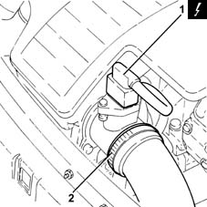
Applies to: engines: 1.3 JTD; all production periods
1. Remove the air filter (1a) complete with air flow meter (1b) by releasing from the underlying pins and then from the rear fastenings.
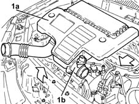
Applies to: engines: 1.3 JTD; all production periods
1. Tighten the nuts fastening the rigid section of the exhaust pipe between the catalytic converter and the silencer, silencer side.
Release the rigid pipe for the exhaust pipe between the catalytic converter and silencer from the silencer.
2. Loosen the collar (2a) and remove the rigid pipe for the exhaust pipe between the catalytic converter and the silencer (2b).
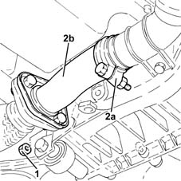
Applies to: engines: 1.3 JTD; all production periods
1. Undo the bolts (1a) and disconnect the air supply pipe between the turbocharger and the heat exchanger (1b), turbocharger side.
2. Remove the gasket.
3. Undo the bolts securing the engine oil return pipe from the turbocharger, engine crankcase side.
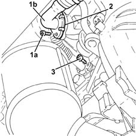
Applies to: engines: 1.3 JTD; all production periods
1. Loosen the band and disconnect the air inlet hose to the turbocharger, turbocharger side.
2. Undo the nuts (2a) and remove the exhaust manifold heat shield (2b) complete with engine lifting bracket (2c).
3. Undo the connector (3a) and disconnect the engine oil supply pipe to the turbocharger (3b), turbocharger side.
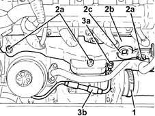
Applies to: engines: 1.3 JTD; all production periods
1. Undo the nuts fixing the turbocharger to the exhaust manifold.
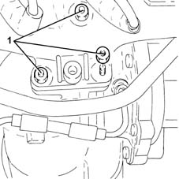
Applies to: engines: 1.3 JTD; all production periods
1. Undo the bolts fixing the catalytic converter mounting bracket to the manual gearbox/engine connecting bracket.
2. Remove the turbocharger (2a) complete with catalytic converter (2b), engine oil return pipe from the turbocharger (2c) and gasket.
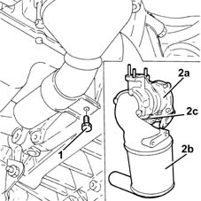
Applies to: engines: 1.3 JTD; all production periods
Position the catalytic converter in a vice fitted with protective jaws.
1. Undo the bolts (1a) and remove the engine oil return pipe from the turbocharger (1b) and the gasket.
2. Open the safety flange lugs.
3. Undo the bolts (3a) and detach the turbocharger (3b) from the catalytic converter (3c).
Remove the gasket.
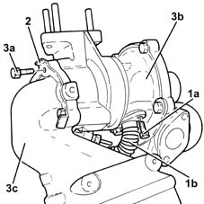
Applies to: engines: 1.3 JTD; all production periods
Refitting
RemovingPlace the gasket back in its housing.
1. Assemble the turbocharger (1a) to the catalytic converter (1b) and tighten the bolts (1c) to the specified torque.
 | Fastening | Component | Ø | Value (daNm) |
|---|---|---|---|---|
1c | Bolt | CATALYTIC CONVERTER (ONE) | M8 | (Turbocharger side) 2.3 ÷ 2.8 |
2. Tighten the safety flange lugs.
3. Fit a new engine oil return pipe from the turbocharger (3a) complete with new gasket in its seating on the turbocharger and tighten the bolts (3b) to the specified torque.
| Fastening | Component | Ø | Value (daNm) |
|---|---|---|---|---|
3b | Bolt | OIL RETURN PIPE FROM TURBO | M6 | (Turbocharger/engine crankcase side) 0.8 ÷ 1.0 |
Remove the catalytic convereter from the vice.
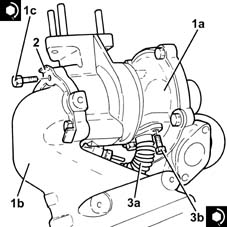
Applies to: engines: 1.3 JTD; all production periods
Refit the turbocharger in its seating complete with catalytic converter, engine oil return pipe from the turbocharger and gasket.
Tighten the bolts fixing the catalytic converter mounting bracket to the manual gearbox/engine connecting bracket.
1. Tighten the nuts fixing the turbocharger to the exhaust manifold to the recommended torque.
| Fastening | Component | Ø | Value (daNm) |
|---|---|---|---|---|
1 | Nut | TURBOCHARGER | M8 | (Exhaust manifold side) 2.3 ÷ 2.8 |
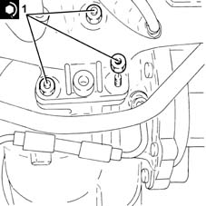
Applies to: engines: 1.3 JTD; all production periods
1. Connect the engine oil supply pipe to the turbocharger (1a), turbocharger side and tighten the connector (1b) to the recommended torque.
| Fastening | Component | Ø | Value (daNm) |
|---|---|---|---|---|
1b | Connector | OIL DELIVERY PIPE TO TURBO | M10 | (Turbocharger side/oil filter mounting) 1.1 ÷ 1.3 |
2. Refit the exhaust manifold heat shield (2a) in its seating complete with engine lifting bracket (2b) and secure it with iits nuts (2c).
3. Connect the air intake sleeve to the turbocharger, turbocharger side, and tighten the band.
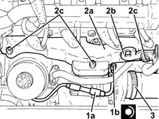
Applies to: engines: 1.3 JTD; all production periods
Place a new gasket between the engine block and the turbocharger engine oil return pipe.
1. Tighten the bolt fixing the enigne oil return pipe from the turbocharger, engine crankcase side, to the specified torque.
| Fastening | Component | Ø | Value (daNm) |
|---|---|---|---|---|
1 | Bolt | OIL RETURN PIPE FROM TURBO | M6 | (Turbocharger/engine crankcase side) 0.8 ÷ 1.0 |
2. Connect the air supply pipe between the turbocharger and heat exchanger (2a), turbocharger side, complete with gasket (2b) and tighten the bolts (2c).
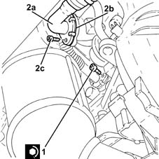
Applies to: engines: 1.3 JTD; all production periods
Refit the rigid exhaust pipe section between the catalytic converter and the silencer and secure it using the collar.
Tighten the nuts fastening the rigid section of the exhaust pipe between the catalytic converter and the silencer, silencer side.
Replace the air filter, complete with air flow meter, in its housing.
Connect the air intake sleeve to the turbocharger, air flow meter side, and tighten the band.
Connect the electrical connection to the air flow meter.
Proceed with refitting .
Connect the negative (-) battery terminal.
Remove the car from the ramps.